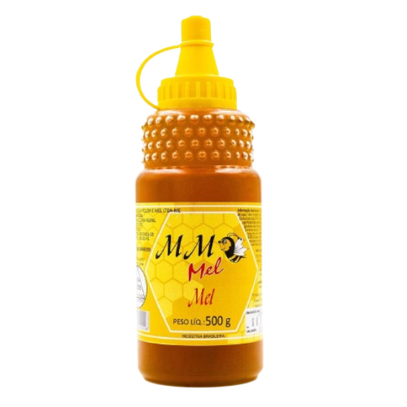
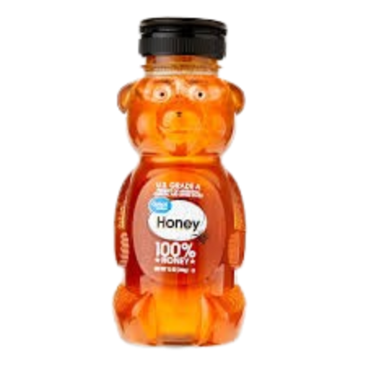
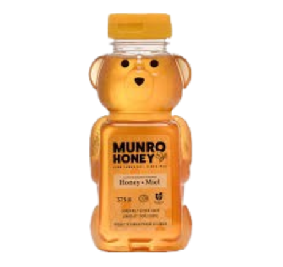

Mel Silvestre

Com sabor equilibrado e aroma marcante, o Mel Silvestre é extraído de várias flores da mata, oferecendo um blend natural rico em nutrientes e perfeito para o dia a dia.
Preço: R$ 35,00
ComprarVoltar para Produtos
Mel de Eucalipto
De coloração mais escura e sabor intenso, o Mel de Eucalipto é conhecido por suas propriedades reconfortantes, ideal para chás, receitas e cuidados naturais.
Preço: R$ 45,00
ComprarVoltar para Produtos
Mel de Laranjeira
Leve, aromático e levemente cítrico, o Mel de Laranjeira encanta pelo sabor suave e é perfeito para quem busca um toque doce sem pesar no paladar.
Preço: R$ 50,00
ComprarVoltar para Produtos
Mel Cremoso
Com textura aveludada e fácil de espalhar, o Mel Cremoso é natural e não escorre, sendo ideal para pães, torradas e receitas que pedem um doce irresistível.
Preço: R$ 40,00
ComprarVoltar para Produtos